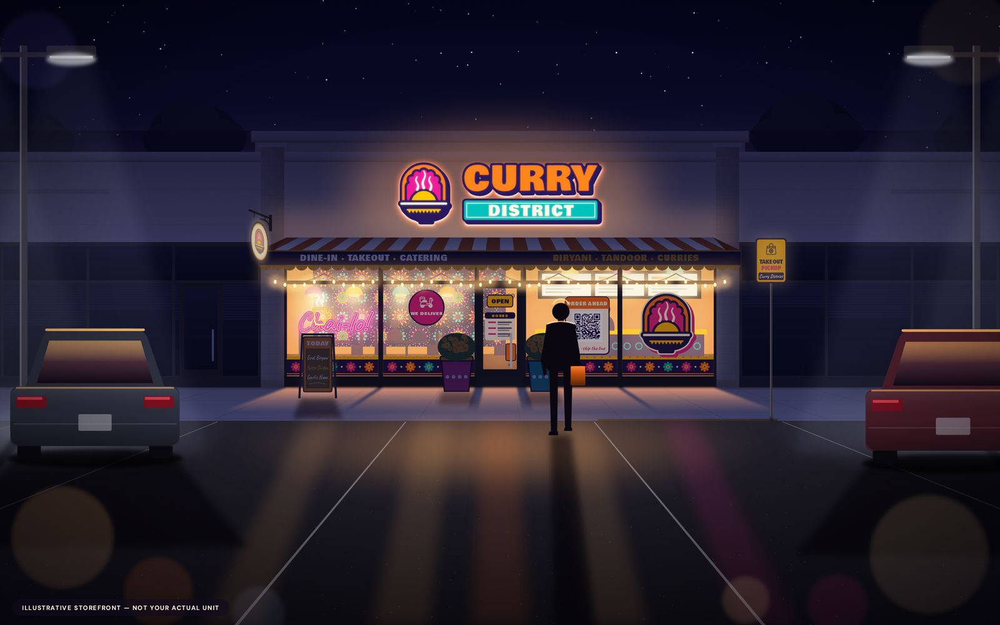
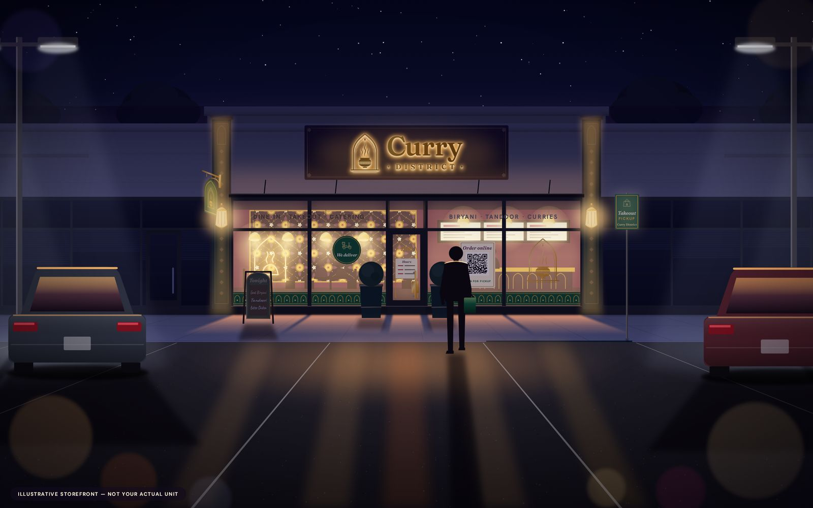
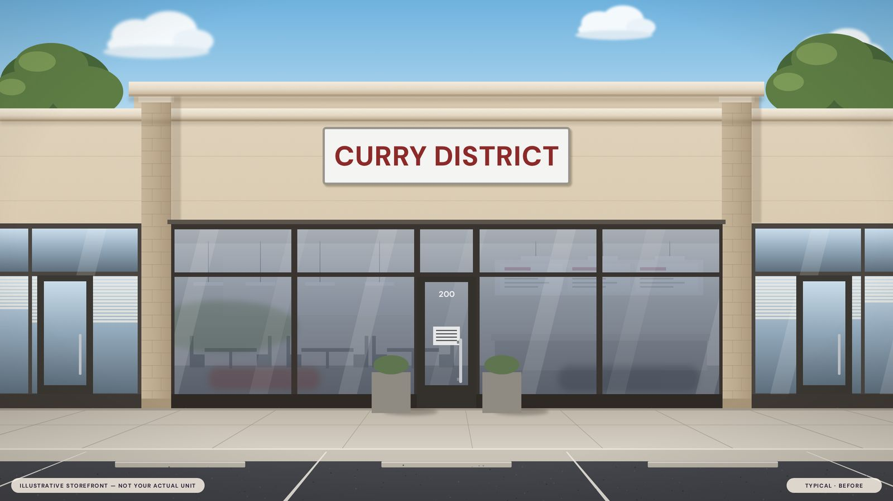
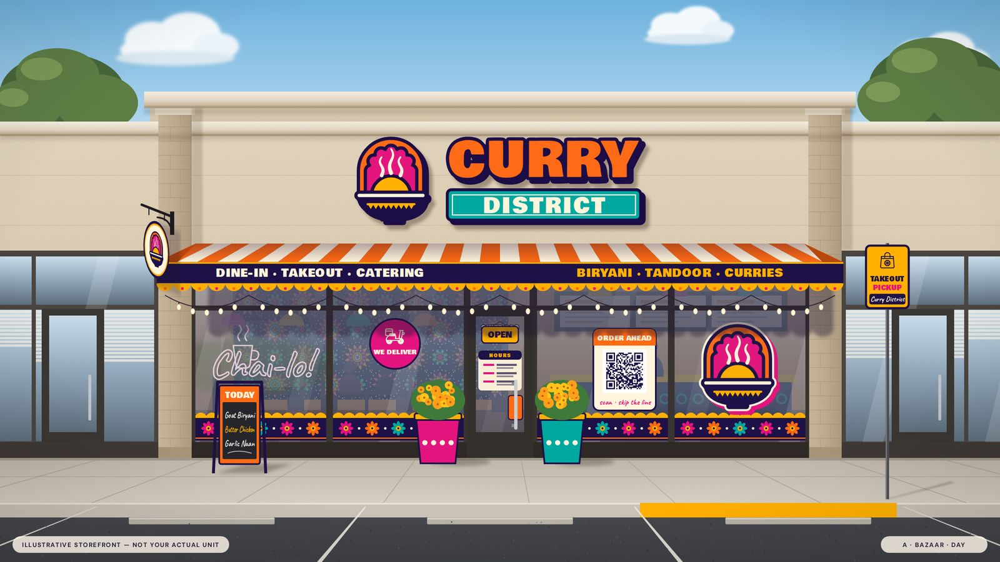
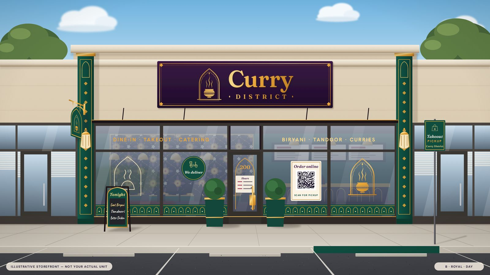
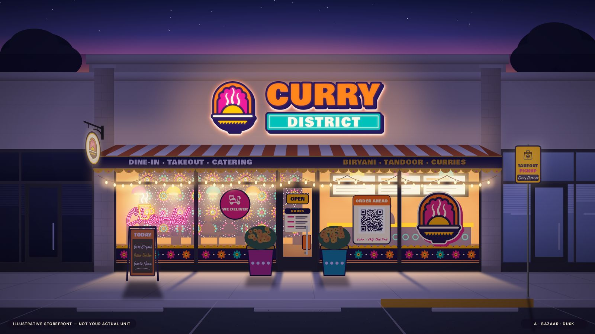
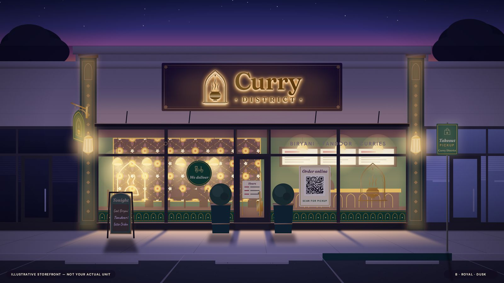

Storefront & signage
Be the brightest thing on FM 423
People decide where to eat from the car. A lit sign, a window that talks and a board on the walk turn a strip-centre unit into a destination — here it is by day, at dusk and after dark, in both directions.




We haven’t surveyed Suite 200, so every storefront here is an illustrative strip-centre unit — not your actual unit. Sizes and placements get adjusted to your façade and the centre’s sign rules.
01
Curb appeal, then what changes
Drag the handle: a typical unbranded unit on the left, the glow-up on the right.



- The sign bandChannel letters that read from the road — halo-lit so the wall itself glows after sunset.
- A blade signThe emblem on a projecting sign catches people walking the row, not just drivers.
- Awning or pilastersBazaar gets a striped awning with a lettered valance; Royal paints the pilasters emerald with gold inlay.
- Glass that talks“Dine-in · Takeout · Catering”, a pattern band, an order-ahead QR and the hours where eyes land.
- A board on the walkA chalkboard A-frame with today’s picks — the cheapest, fastest curb-appeal win.
- A pickup bayA branded curbside “Takeout pickup” post and painted curb for order-ahead regulars.
02
Day → dusk
Same unit, same angle. Slide to switch the lights on — this is when dinner traffic decides.

A · Bazaar Face- and halo-lit letters, festoon bulbs, a “Chai-lo!” LED neon.

B · Royal Halo-lit brass letters, lanterns washing the pilasters, an LED-neon arch.
03
The whole kit
Storefronts, window decals, A-frames and wayfinding. Tap to open full-screen; every piece has a vector download.
04
Sign permit & approvals
The order matters: landlord first, then the Town, then the fabricator. Flags show how solid each fact is.
-
Get the centre’s sign criteria
Ask the property manager for the shopping centre’s sign criteria — they control letter style, colours, lighting and placement. Curry District’s own criteria weren’t found. to verify
Typical centre rules seen nearby: written landlord approval of all storefront signs, scaled + shop drawings, tenant pays permits and fabrication; blade signs capped around 6 sq ft with 8 ft clearance. S approx · other centre
-
Design inside the allowances
Little Elm wall-sign allowance: about 3 sq ft per linear foot of primary frontage, capped at 200 sq ft per tenant. S approx
A-frames: listed as a portable sign type — 12 sq ft cap, 4 ft high, one per tenant (code PDF dated 2013; check it’s current). S check City / landlord
-
Landlord signs off in writing
Submit scaled elevations (like the ones above, drawn to your real façade) and the fabricator’s shop drawings. Awning, painted pilasters and the curbside post also need the landlord’s OK. E
-
Little Elm sign permit
Building Safety issues a permit before a sign is erected, replaced, altered — even a face change — unless exempt under Table 86.1. Decision within 30 days of a complete application; none issued while a property has sign violations. S
Permitting: 214-975-0456 S · Fee: not found to verify · Window graphics & A-frame exemptions to verify
-
Fabricate
Channel letters run about 4–8 weeks including permit; LED neon 2–4 weeks; vinyl 1–2 weeks; A-frames in days. S Blade sign 3–5 weeks. E
-
Install & switch on
Licensed installer and electrician for lit signs; any final inspection per the permit. Then photograph it at dusk for Google and social. E to verify
05
What it costs, roughly
Budgeting ranges from our research, not quotes. Start with glass, a board and a QR; letters are their own phase.
| Item | Low | Mid | High | Lead time | Flag |
|---|---|---|---|---|---|
| A-frame sign | ~$100 | ~$200 | ~$400 custom | days | S |
| Window hours / logo decals | — | ~$260 | — | 1–2 wks | S |
| Window vinyl / perforated film | ~$300 | ~$1,000 | ~$3,000 | 1–2 wks | S |
| Vinyl install, typical storefront | ~$150 | — | ~$600 | — | S |
| LED neon (window) | ~$250 · 24 in | ~$800 · 36–48 in | ~$2,500 · 60 in+ | 2–4 wks | S |
| Blade sign | ~$400 | ~$1,200 | ~$3,000 | 3–5 wks | E |
| Re-skin existing sign face | ~$300 | — | ~$1,200 | — | E |
| Channel-letter wall sign | ~$3,000 | ~$5,500 | ~$9,000+ | 4–8 wks incl. permit | S |
| …halo-lit letters | ~$4,000 | — | ~$9,000 | 4–8 wks | S |
| Backlit menu boards | ~$150 / box | ~$1,000 · 3 boxes | ~$4,000 · 3 screens | 1–3 wks | S |
| Awning, painted pilasters, wayfinding set, curbside post | Not in our research yet — get quotes | quote | |||
Quick-win path: chalkboard A-frame (~$110 S, check the 12 sq ft cap) + door hours/logo decals (~$260 S) + an order-ahead QR panel — all landlord-light. Channel letters ($3,000–7,000, S) are a separate phase.